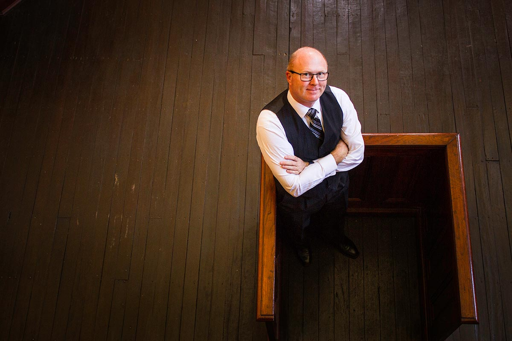

About Us

Mortlock Ryan & Co Barristers and Solicitors are based in Northam Western Australia. Our dedicated team provides a timely, professional and personal service for our clients.
Michael Ryan is our firm’s principal. Michael is primarily a criminal law practitioner who also practices in the areas of Wills and Probate and family mediation. Michael is the firm’s registered Family Dispute Resolution Practitioner.
Michael previously worked as a police officer for the Western Australian Police for nearly twenty years spending most of his police career in country WA gaining extensive experience in police investigations, community policing and police prosecutions. It was during this time that Michael saw the need for legal practitioners who were prepared to practice and travel in regional Western Australia.
Michael graduated with a Bachelor of Laws from the University of New England in 2013 and was subsequently admitted as a Barrister and Solicitor of the Supreme Court of Western Australia that same year.
Michael left the Western Australian Police with nine years’ experience as a prosecuting sergeant at the end of 2014 and commenced work with the Western Australian Legislative Council, where he advised different Standing Committees including the Standing Committee on Estimates and Financial Operations, the Standing Committee on Environment and Public Affairs and the Joint Standing Committee on Delegated Legislation.
Michael established the firm Mortlock Ryan & Co Pty Ltd in June 2016 to follow his desire to see legal practitioners providing quality legal services to regional Western Australians.
Our passion for country people is an integral part of what drives us at Mortlock Ryan & Co to build lifelong relationships, work within and for our communities and why we do what we do.
Our major type of legal practice that we do is Criminal Law